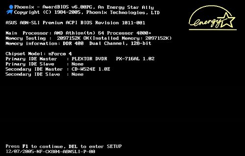

1.7 Systems Software
Pre-requisite
Systems software encompasses the operating system, system utilities and the BIOS/UEFI.
"Systems software manages all the actions of the computer and helps users to organise their programs and data and tell the computer what they want it to do." ~ OCR Computer Science GCSE Student Book (page 181)
The BIOS is the Basic Input Output System controls the computer at start-up, to test system hardware, and to load the operating system. Each motherboard has its own custom firmware, to perform actions specific to that motherboard.
Figure 1 - A motherboards boot, showing the actions of the BIOS
Operating System
The operating system is designed to allow the hardware and software to communicate, manages these devices, controls all the processes, and ensures that everything is running smoothly.
Roles of the operating system
The operating system acts as an interface between the hardware and the software (along with the software requesting access to input/output devices). It is the most important fundamental of all system software. Its roles include:
The operating system is required to manage the RAM (random access memory). Programs need to know where to access, some may need to be placed into the RAM, and some will be too large, and will require a swap file (on the hard drive, acting as virtual RAM). Memory management is the operating systems job.
The operating system is required to control the processes that are currently running, whether that be utilizing 'application program interfaces' (APIs), or drivers.
The operating system needs to manage the peripherals that are connected as inputs or outputs. It communicates using software drivers.
Operating systems are required to control all the files on the computer, along with their permissions and file types.
The OS displays a user interface, whether this be a command line or a GUI, to allow the user to input data.
Examples of operating systems
Memory and Processor Management
The OS allocates memory between the different programs at the same time. Programmers don't need to know where their data is being stored, only that it is.
Similarly, the OS manages the events on the processor, and schedules tasks to run. It creates the illusion of multitasking (on single core/thread CPUs).
'Interrupt-driven'
Most modern operating systems are interrupt-driven. This means that there is a task that requires the computers immediate attention, and instead the CPU should act upon the interrupt task. Once it is finished, it returns to what it was doing. This is part of the Interrupt Handler (or the Interrupt Service Routine, the ISR).
There are two types of interrupts:
For instance, if you try and divide by zero, it will cause an exception, which will be caught by the OS to abort the instruction.
User Interface
Operating systems give the user a user interface, to allow the user to interact with the machine. There are many types of user interface:
Application software
Applications are pieces of software designed to run on the system, through the system software.
Utility software
Utility software is system software designed to help analyse, configure, optimize or maintain a computer. Examples of utility software include:
Antivirus software is covered in topic 1.6; suffice to say, malware and viruses (malicious applications) can infect a computer system. As such, anti-virus software is designed to protect against malicious code.
Hard drives become fragmented, meaning that sequential data is stored on different parts of the hard drive platter. This means it takes longer for the computer system to load data off of the drive. A way to fix this is by using defragmentation software, that moves data closer to other related data, speeding up the access times of the disk.
Some software can only run on other operating systems. As such, virtualization software is designed to allow the user to run a sub-operating system, allowing different software packages to be ran.
A file manager such as Windows Explorer allows the user to manage, create, delete, move and rename files.
If there is a problem with the computer's operating system, diagnostic software allows the user to view information about the system; this may be as simple as CPU and RAM usage, whilst other diagnostic software might be more involved, with showing you which specific services and software APIs are running.
Calendar software allows the user to track events like a real calendar. Calendar software can have specific 'smart' features, such as reminders and alarms.